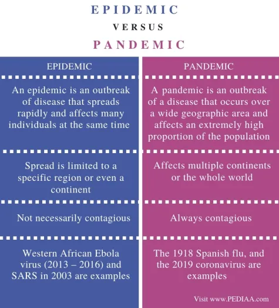

1. Define Disaster risk reduction?
Disaster risk reduction is the concept and practice of reducing disaster risks through systematic efforts to analyse and reduce the causal factors of disasters.
2. Difference between Epidemic and Pandemic

3. Roles and Responsibilities of SDMA?
The State Disaster Management Authority (SDMA) is responsible for formulating policies, plans, and guidelines for disaster preparedness, mitigation, and response at the state level. It coordinates with various departments, promotes capacity-building initiatives, and ensures effective communication to minimize the impact of disasters. SDMA plays a crucial role in facilitating and implementing disaster risk reduction strategies to enhance overall resilience within the state.
4. Needs of Community based DRR?
5. Factors affecting vulnerability?
Factors affecting vulnerability include socio-economic status, access to resources, geographic location, infrastructure quality, and levels of education. These elements influence a community or individual's ability to prepare for, cope with, and recover from disasters.
6. Relevance of Indigenous Knowledge?
Indigenous Knowledge is being incorporated in modern engineering technology to produce viable structures in earthquake, flood and cyclone prone areas. Physical vulnerability of structures causes maximum disaster casualties. Hence, stress is also on retrofitting old structures with a view to making them disaster-resistant besides making new ones with disaster-resistant technology.
7. Needs of Disaster Relief health?
8. Disaster management assessment?
Disaster management assessment involves evaluating the readiness, response capabilities, and resilience of a community or organization to identify strengths, weaknesses, and areas for improvement in mitigating and responding to disasters. It informs strategic planning for effective disaster preparedness and risk reduction.
9. Drought assessment?
Drought assessment involves evaluating the severity and impacts of prolonged water scarcity on agriculture, ecosystems, and communities, informing resource allocation and mitigation strategies to address the immediate and long-term consequences. It aims to enhance resilience and sustainable water management.
10. Bhopal case study?
The Bhopal gas tragedy occurred on December 3, 1984, when 45 tons of methyl isocyanate (MIC) gas leaked from a pesticide plant in Bhopal, India. The gas mixed with water used for cooling and was released into the air. People began to feel sick, vomit, and have trouble breathing. Within minutes, many people died. The official death toll was 2,259, but by 1991, 3,928 deaths had been certified.